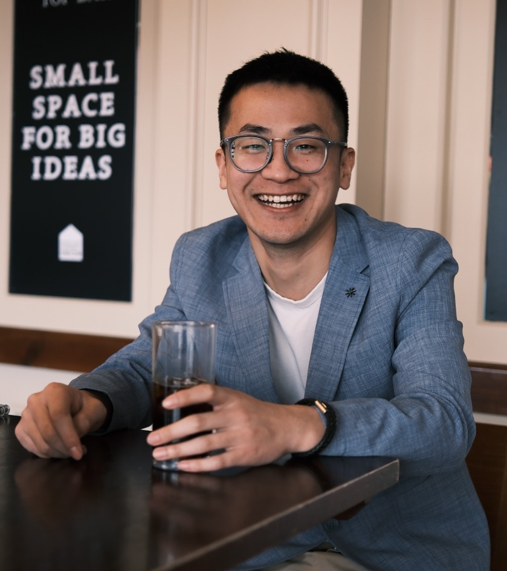

Hao Zhou (周昊)
Department of Computer Science |
 |
I am a postdoctoral researcher at the Department of Computer Science, University of Oxford , working with Prof. Michael Wooldridge and Prof. Anisoara Calinescu. Prio to this, I received my PhD, supervised by Dr Maria Kyropoulou and Dr Panagiotis-Kanellopoulos, from the Centre for Computational Finance and Economic Agents (CCFEA) , University of Essex in 2023.
My research interests include algorithmic game theory, computational finance, and agent-based financial modelling. I am highly interested in reasoning about the strategic behaviours in large-scale financial networks from both game-theoretic and empirical perspectives, as well as the applications of reinforcement learning in finance and economics.
ResearchMuch of my current work is about image/video understanding. During my PhD stuides, my research is mainly about understanding lighting from images. Some selected papers are listed below. For a full list of papers, refer to my Google Scholar. |